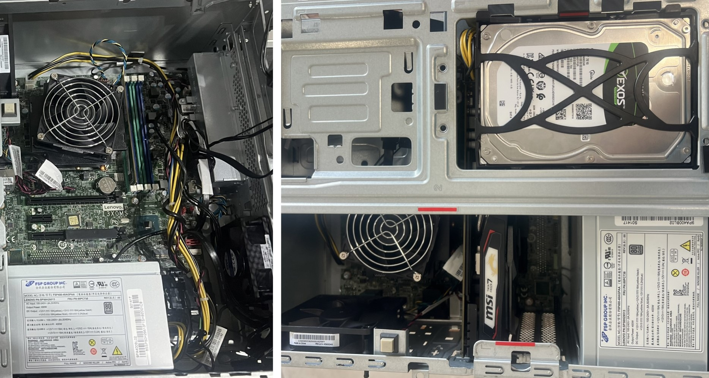
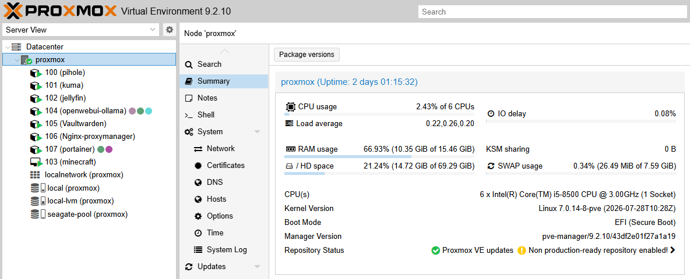
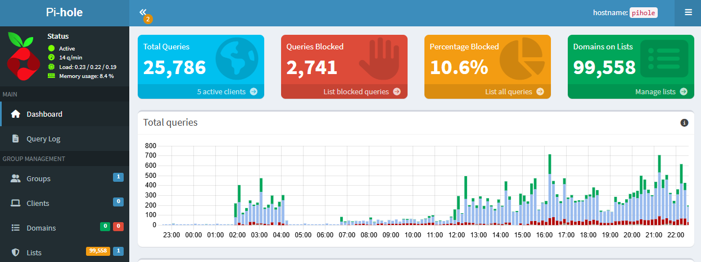
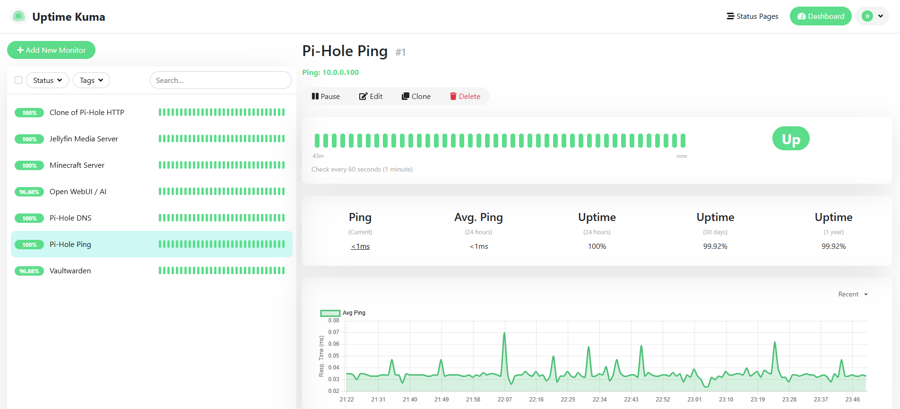
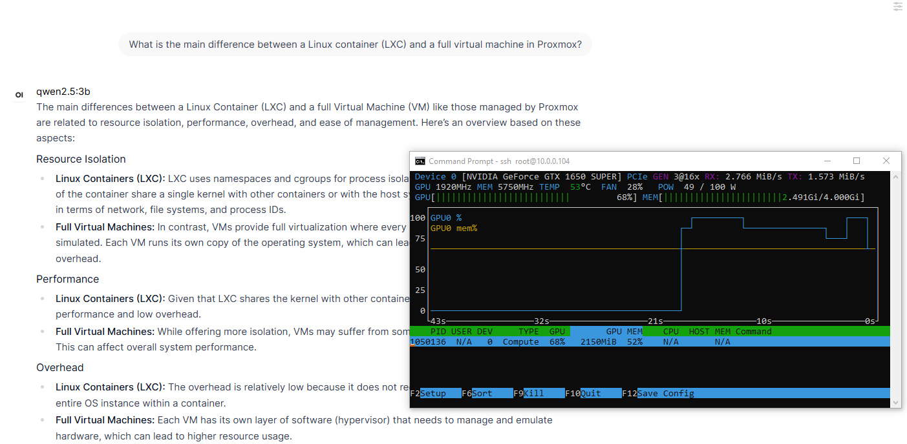

Infrastructure Log
Building My Proxmox Homelab: An In-Progress Systems Administration & Infrastructure Project
When I set out to build my own homelab, my goal was to move beyond textbook theory and design a production-grade, self-hosted infrastructure from scratch. This environment serves as my ongoing hands-on engineering sandbox for systems administration, virtualization, enterprise networking, and security automation.
Rather than a static setup, this project is actively evolving as I deploy, scale, and troubleshoot complex service stacks on physical hardware I control.
1. Hypervisor Architecture & Storage Tiering
At the core of the infrastructure is a dedicated physical bare-metal host running Proxmox Virtual Environment (VE). To optimize resource utilization and isolation, I architected a hybrid deployment model utilizing both lightweight Linux Containers (LXCs) and full Virtual Machines (VMs).
- Storage Performance & Tiering: To prevent I/O bottlenecks, I separated system runtimes from bulk storage. Operating systems, application databases, and metadata reside on high-speed solid-state storage (
local-lvm). Meanwhile, bulk media assets are isolated on a high-capacity drive array mapped directly into containers via Proxmox bind mounts.
- Resource Isolation: Each service is isolated with strict vCPU and RAM allocations, ensuring that heavy background tasks do not destabilize core network functions.

Physical Bare-Metal Server Hardware Setup & Chassis Interior
Click to Expand

Proxmox VE Hardware & Storage Pool Dashboard Interface
Click to Expand
Active Node Topology Layout
[Node: Proxmox Host (10.0.0.147)]
├── LXC 100: Pi-hole (10.0.0.100) + Unbound DNSSEC Resolver (127.0.0.1:5335)
├── LXC 101: Uptime Kuma Network Monitoring (10.0.0.101:3001)
├── LXC 102: Jellyfin Media Streaming Engine (10.0.0.102:8096)
├── VM 103: Ubuntu Docker Engine - Minecraft Server (10.0.0.103:25565)
├── LXC 104: Open WebUI & Ollama AI Engine (10.0.0.104:3000)
├── Docker: Vaultwarden Password Manager (10.0.0.105:8080)
└── Host/Docker: Nginx Proxy Manager (10.0.0.106:81)
2. Core Network Services & Zero-Trust Access
A reliable infrastructure requires robust local DNS management and secure edge routing.
- Network-Wide Ad & Threat Filtering: Deployed Pi-hole v6 as a centralized DNS sinkhole to mitigate malicious domains and network-wide telemetry.
- Recursive DNS & DNSSEC Validation: Layered Unbound behind Pi-hole to operate as a local, validating recursive DNS resolver. By bypassing public upstream providers, queries resolve directly and securely against root servers with DNSSEC enforcement.
- Reverse Proxy & Automated SSL/TLS: Integrated Nginx Proxy Manager to handle local SSL termination and route web traffic securely. Using Cloudflare DNS-01 API challenges, the system automatically provisions and renews Let's Encrypt wildcard certificates (
*.damonditrichs.com), enabling secure internal HTTPS access without exposing raw ports to the public internet.

Pi-hole Centralized DNS & Ad-Blocking Dashboard
Click to Expand
3. High Availability, Automation, & Media Services
- Infrastructure Monitoring: Configured Uptime Kuma to continuously monitor the health, liveness, and DNS resolution paths of all internal services, providing automated alerts for state changes.
- Media Streaming Pipeline: Deployed a Jellyfin media server tied directly to the ZFS storage pool, managing media indexing and local streaming across household clients.
- Containerized Workloads: Deployed a dedicated Ubuntu Virtual Machine running an isolated Minecraft game server via Docker Compose, complete with automated restart policies and resource governance.

Uptime Kuma Infrastructure Monitoring Dashboard & Service Health Metrics
Click to Expand
4. Local Artificial Intelligence Integration
To explore modern machine learning workflows, I provisioned an LXC container running a self-hosted AI stack via Ollama and Open WebUI.
- Hardware Passthrough: Passed an NVIDIA GeForce GTX 1650 SUPER directly through the Proxmox hypervisor into the container using device nodes and cgroup permissions.
- Performance: This enables full GPU acceleration for local large language models (such as Qwen 2.5 and DeepSeek-R1), delivering hardware-accelerated local inference, coding assistance, and text generation entirely off-cloud.

Open WebUI Chat Interface & Terminal GPU Usage Monitor
Click to Expand
5. Engineering Challenges & Troubleshooting
Building and scaling a homelab naturally involves overcoming technical roadblocks. Here are a few key engineering challenges I've navigated:
- Split-DNS and SSL Routing: Balancing local network resolution with external wildcard certificates required configuring Pi-hole custom DNS entries so that internal clients resolve domain names locally to their respective container IPs while still trusting the Nginx Proxy Manager SSL handshake.
- GPU Passthrough Permissions: Getting the local AI container to recognize the NVIDIA GPU required careful configuration of LXC device mapping (
/dev/nvidia*), cgroup2 device allow rules, and manual bind-mounting of runtime hooks to ensure the container had direct hardware access without compromising host stability.
- Storage Bind-Mount Permissions: When attaching the bulk storage pool to the Jellyfin container, managing user and group UID/GID mappings between the Proxmox host and the unprivileged container ensured the service could read and write media files securely without permission drift.
6. Current Focus & Roadmap
- Professional Alignment: Using this environment to anchor my practical knowledge while actively studying for advanced IT and networking certifications.
- Infrastructure Expansion: Continuously hardening security boundaries, optimizing automated backup strategies, and expanding containerized monitoring workflows.